September@w3c'>@w3c: W3Cx MOOC, @w3c'>@w3c workshops, business show, etc. https://www.w3.org/participate/eventscal.html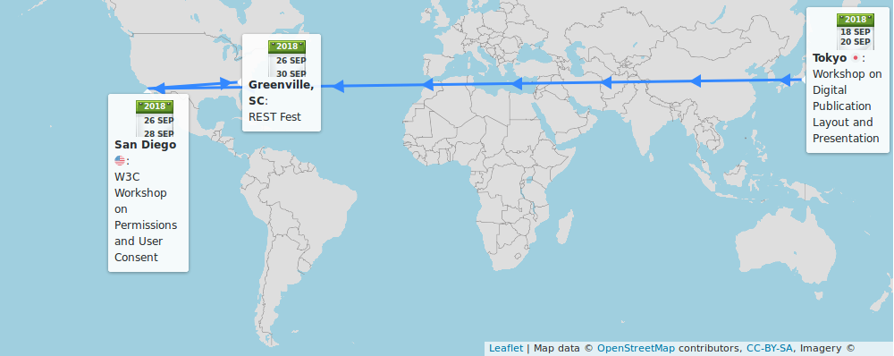
14: opening of a new CSS Basics #MOOC session for #developers #designers https://www.edx.org/course/css-basics-w3cx-css-0x-0 #HTML5 #CSS with @MicrosoftEDU @w3cx @edXOnline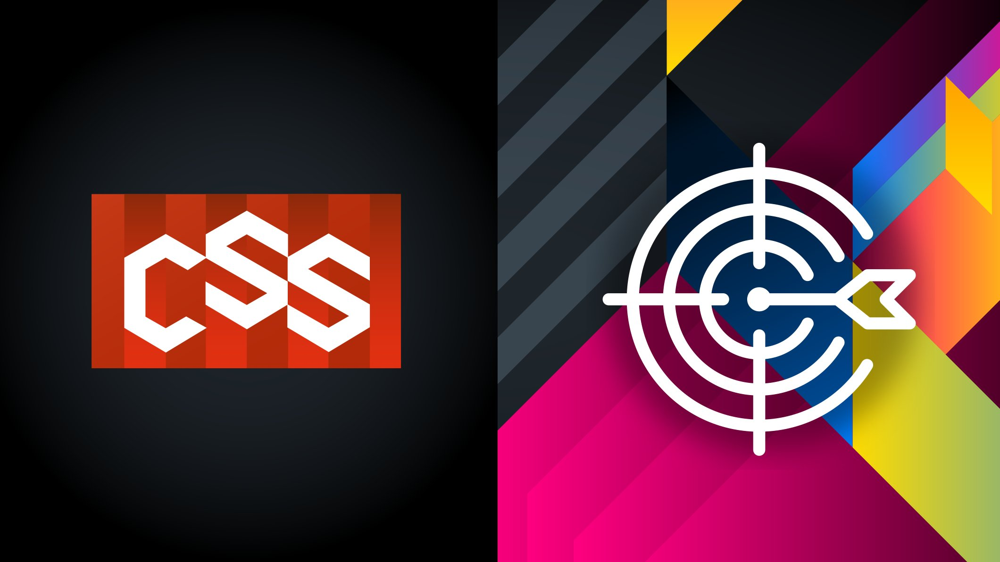
https://twitter.com/w3cdevs/status/1035779691217645568Check out the #digipub workshop's 17 position statements while awaiting for the workshop report! https://www.w3.org/publishing/events/tokyo18-workshop/papers.html
https://twitter.com/w3cdevs/status/103577969985373388818-19: a #digipub #W3CWorkshop on publishing #manga #magazines, organized by @w3cpublishing and hosted by @Keio_univ_PR's Advanced Publishing Laboratory, in #Tokyo 🇯🇵
https://www.w3.org/publishing/events/tokyo18-workshop/
https://twitter.com/w3cdevs/status/103577969791171379226-29: @RestFest conference in #Greenville_SC 🇺🇸 http://2018.restfest.org/east/ #RESTful #apps
https://twitter.com/w3cdevs/status/103577970315465932826-27: another great #W3CWorkshop on #permissions and user consent #privacy #security, hosted by @Qualcomm in #SanDiego 🇺🇸 https://www.w3.org/Privacy/permissions-ws-2018/ (position papers: https://www.w3.org/Privacy/permissions-ws-2018/papers.html)
https://twitter.com/w3cdevs/status/1035779701502078976Thank you for the translation into Japanese! This @w3c specification (in #WorkingDraft status) defines a high-level Web #API for processing and synthesizing audio in #WebApps https://www.w3.org/TR/2018/WD-webaudio-20180619/ #html5j #w3c_keio https://twitter.com/g200kg/status/1036097073827917825
https://twitter.com/w3cdevs/status/1036916448738856960What's in a name? Quite a bit actually, and getting it right is by no mean easy - the @webi18n has some useful reference material on how to deal with personal names around the world https://www.w3.org/International/questions/qa-personal-names.en.html https://t.co/aHfctrZ55X
https://twitter.com/w3cdevs/status/103735399112924774510-11: @ri gives an introduction to writing systems and Unicode #tutorial @Unicode conference in #SantaClara, CA 🇺🇸 and presents ways to support text layout on the #Web cc @AddisonI18N http://www.unicodeconference.org/program.htm @webi18n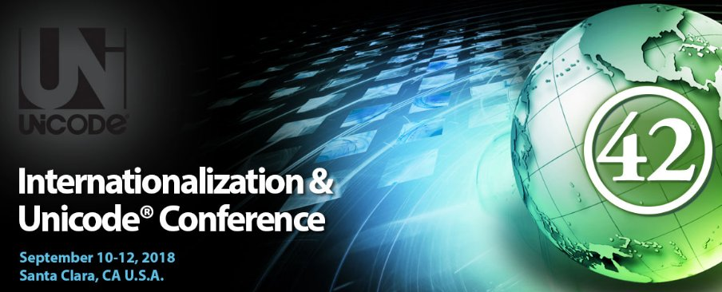
https://twitter.com/w3cdevs/status/103810321057203814713-18: meet @tidoust to discuss and exchange on how media technologies on the #Web evolve! @IBCShow #RAI https://show.ibc.org in #Amsterdam 🇳🇱 https://www.ibc.org/ #IBC2018
https://twitter.com/w3cdevs/status/1038105627585904641We are excited to announce the upcoming @w3c #free #DevMeetup in #Lyon 🇫🇷, on 22 October 2018! #SaveTheDate https://www.w3.org/2018/10/Meetup/ @UniversiteLyon #OFFBlendWebMix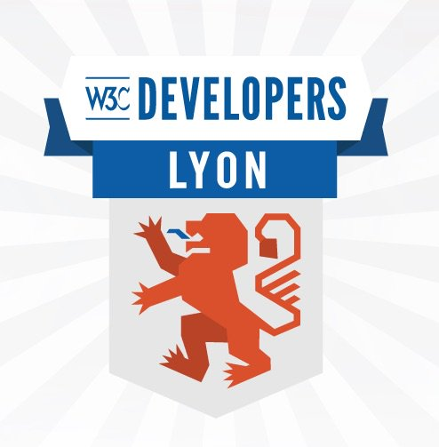
Register #asap! Our #meetup is open to everyone at no cost, but space is limited: https://ti.to/w3c/w3c-developer-meetup-lyon-2018cc
https://twitter.com/w3cdevs/status/1039805768592248833In addition, do not miss the cool #demonstrations of @w3c #Web technologies either in deployment or under exploration and prototyping: #WebVR #WebAR #MapML #WebOfThings #IntersectionObserver #WebAuthn, Web & Machine Learning, and many more!
https://twitter.com/w3cdevs/status/1039805774015422464Come listen to this year's awesome speakers: @nitot (@Qwant_FR) @alispivak (@MDN) @regocas (@igalia ) @ri (@web18n) and @rachelandrew on topics about #CSS #privacy #i18n #WebDocumentation
https://twitter.com/w3cdevs/status/1039805771826036736We'll provide more detailed info about the talks and the demonstrations in the coming weeks, so stay tuned!
https://twitter.com/w3cdevs/status/1039805777555480577And special thanks to our sponsors @nttcom @stickermule @Qwant_FR @mozilla and @Microsoft for supporting this event!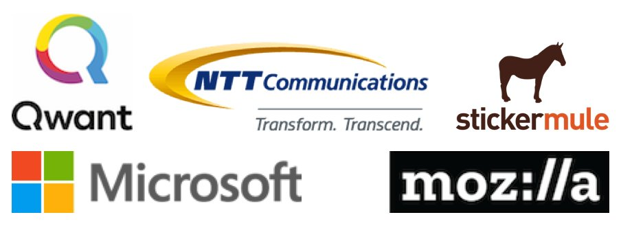
https://twitter.com/w3cdevs/status/1039805775483420672The first part of @w3c's #DevMeetup on October 22 in #Lyon 🇫🇷 will be a series of #demos of technologies ranging from under ongoing standardization to more exploratory or at the prototype stage: https://www.w3.org/2018/10/Meetup/demos.html
As a first example of exploratory work, coming from https://www.w3.org/2017/sdwig/, the Web Video Map Tracks #WebVMT format allows to share and index videos with location on the #Web: https://w3c.github.io/sdw/proposals/geotagging/webvmt/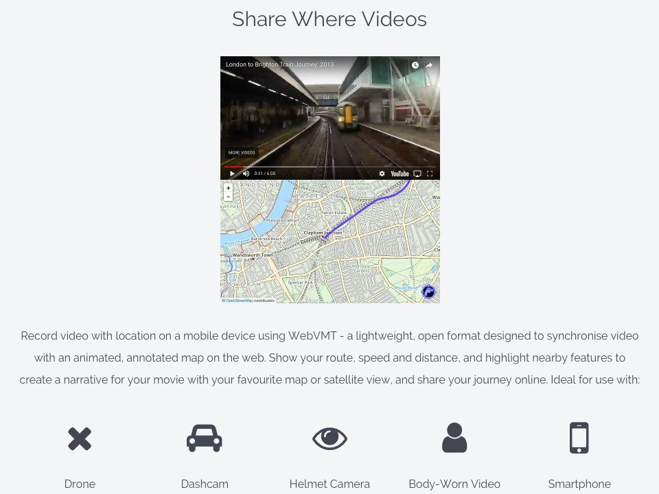
https://twitter.com/w3cdevs/status/1042045448364740608A second demo: sharing location with video using #WebVMT to race from London Victoria to Brighton by train in 4 minutes http://webvmt.org/demos#youtube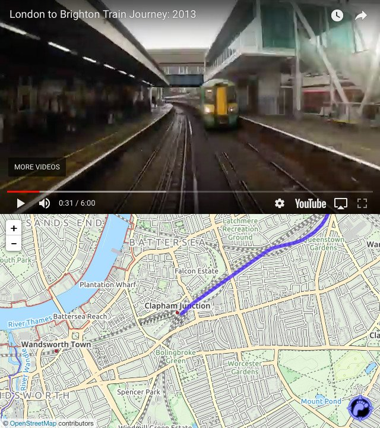
https://twitter.com/w3cdevs/status/1042045457076248576A first #WebVMT demo: exploring more than a century of aviation history at Farnborough airfield, the birthplace of #British aviation 🇬🇧 http://webvmt.org/demos#intro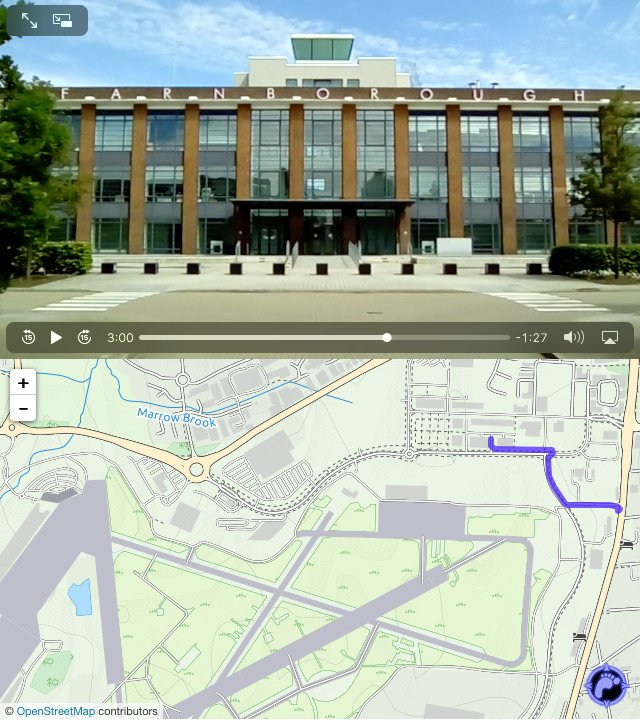
https://twitter.com/w3cdevs/status/1042045453636972544Third demo: recording location with video using #WebVMT on a smartphone and loading it into a #WebBrowser to play alongside an animated, annotated map http://webvmt.org/demos#mobile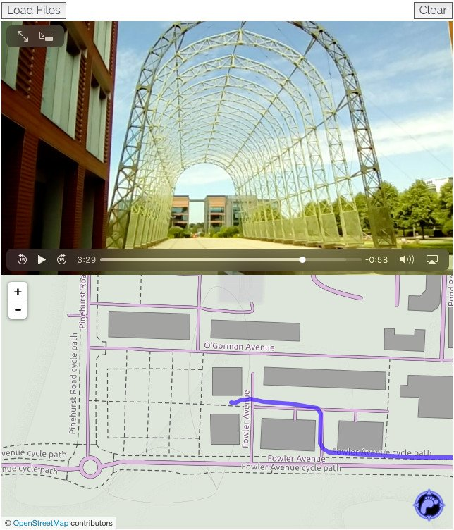
https://twitter.com/w3cdevs/status/1042045460280750082Come discover all these cool demos presented by @w3c's #InvitedExpert Rob Smith @away_team. The #DevMeetup is free and open to all, you just need to register! https://ti.to/w3c/w3c-developer-meetup-lyon-2018

https://twitter.com/w3cdevs/status/1042045464114343937Check out the test suite developed by the #WorkingGroup: https://github.com/web-platform-tests/wpt/tree/master/webaudio
Great timing for the #wac2018 conference + #webaudioberlin meetup indeed! The #WebAudio @w3c specification describes a high-level Web #API for processing and synthesizing audio in #WebApps #timetoimplement https://twitter.com/svgeesus/status/1042042947762573312
https://twitter.com/w3cdevs/status/1042050775852220420Comments and feedback are welcome on #WebAudio's #github: https://github.com/WebAudio/web-audio-api/issues
https://twitter.com/w3cdevs/status/1042050778863755265You can get a sense from the event from the live-tweets thread from @rachelnabors one of the presenters at the workshop https://twitter.com/rachelnabors/status/1041847739468800002
Yesterday and today were the dates for the @W3C Workshop on Digital Publication Layout and Presentation (from #Manga to #Magazines) - “exploring the future of visually-rich long-form digital publications” https://twitter.com/w3cdevs/status/1035779697911713792
https://twitter.com/w3cdevs/status/1042383555895209986See also the slides @fantasai presented there https://twitter.com/fantasai/status/1042338854454231040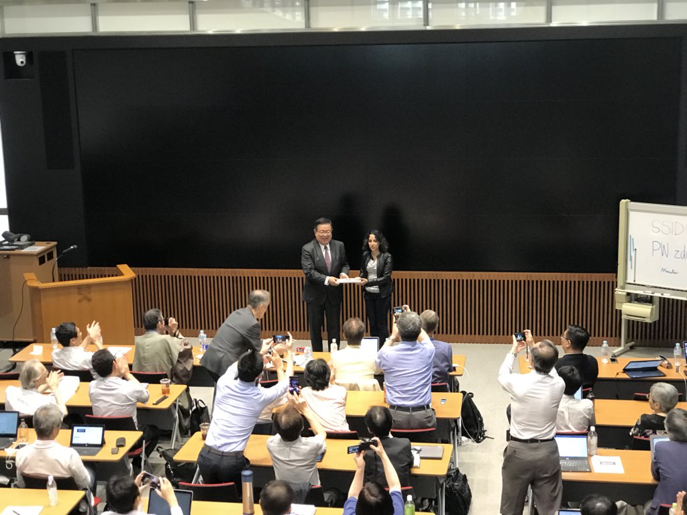
https://twitter.com/w3cdevs/status/1042383557874855937All the position papers and slides from the event are already linked from https://www.w3.org/publishing/events/tokyo18-workshop/schedule.html
A workshop report is expected in a few weeks, with conclusions and proposed next steps for this rich topic!
https://twitter.com/w3cdevs/status/1042383562270486528#developers and #designers are using #CSS on a daily basis in their Web developments, but can they have any influence on its definition? Of course they can! And nowadays in a very simple way.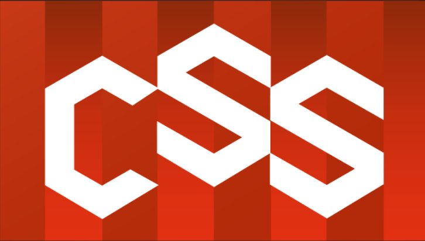
Want to know what it takes to contribute to the development of #CSS specifications that style the #Web? Come hear @regocas (@igalia) at the #w3cdevs2018 #Meetup on 22 Oct. in #Lyon. Register at https://ti.to/w3c/w3c-developer-meetup-lyon-2018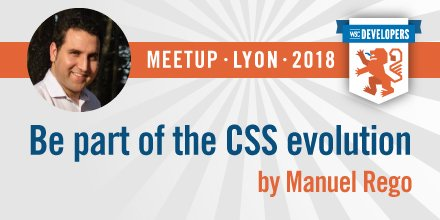
https://twitter.com/w3cdevs/status/1042690440053567488In this presentation, @regocas will talk about the @w3c @csswg: how it works, who is part of this group, where are their repositories and, more importantly, how anyone can provide #feedback to improve the #CSS specifications https://twitter.com/w3cdevs/status/986283413316472837
https://twitter.com/w3cdevs/status/1042690442532409345This talk from @regocas will try to reduce the disconnect between Web developers and the #CSS authors and implementors, proposing a closer cooperation and sharing light about how it can be articulated. More at https://www.w3.org/2018/10/Meetup/
https://twitter.com/w3cdevs/status/1042690447485947904Very related to this work are all the #interoperability efforts that are being performed to build a cross-browser testsuite for the Web-platform stack. @regocas will focus on the web-platform-tests repository and explain how to contribute to it https://github.com/web-platform-tests/wpt
https://twitter.com/w3cdevs/status/1042690445032284160Congrats to John Daggett (@mozilla), @Litherum (Apple) and @svgeesus (@w3c'>@w3c) and the @csswg for the newly published @w3c'>@w3c #WebStandard CSS Fonts 3 https://www.w3.org/TR/css-fonts-3/ #timetoadopt #CSS https://twitter.com/w3c/status/1042707072926855168
The @csswg is already hard at work towards the next level of CSS Fonts https://www.w3.org/TR/2018/WD-css-fonts-4-20180920/#introduction with planned support for variable fonts
As usual, the work is happening on github https://github.com/w3c/csswg-drafts/tree/master/css-fonts-4
https://twitter.com/w3cdevs/status/1042767993024012289And that new charter of the #WebPerf working group is now approved! 🎉 https://twitter.com/w3c/status/1042792778978283521
https://twitter.com/w3cdevs/status/1042812377052454915The opportunity to get involved in web standards with mentoring from a top notch standardista! https://t.co/UDmnSDgA5I
https://twitter.com/w3cdevs/status/1042994693145939968.@svgeesus shares the whole story about CSS & Fonts https://www.w3.org/blog/2018/09/css-fonts-3-is-a-w3c-recommendation/ https://twitter.com/w3c/status/1042912046445146112
https://twitter.com/w3cdevs/status/1043031812526694401Another demonstration of an exploratory work at the @w3c #DevMeetup, coming from https://www.w3.org/2017/sdwig/, is the Map Markup Language (#MapML) https://www.w3.org/2018/10/Meetup/demos.html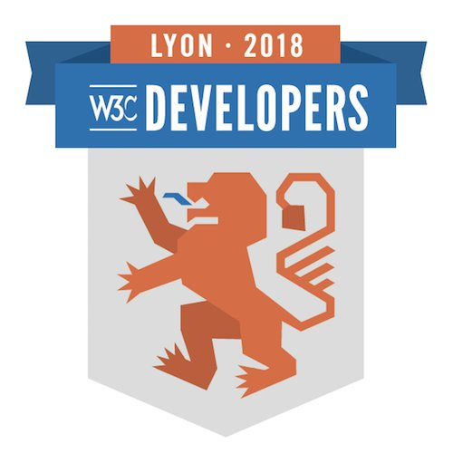
#MapML is a proposed extension of #HTML that integrates the #Web and the #GeoWeb in a way that lowers the barriers to making and using maps on the #Web.
https://twitter.com/w3cdevs/status/1043154640588734464Mobile technology has allowed #WebBrowser and other #Apps to geo-locate the user; MapML allows the browser to geo-locate and represent resources from any Web site!
https://twitter.com/w3cdevs/status/1043154648880898048#MapML is a proposal from the @w3c Geospatial Web mapping #CommunityGroup http://maps4html.org to the Web platform community to collaborate on a standard intended to help the platform to progressively achieve its full potential.
https://twitter.com/w3cdevs/status/1043154647010222080Come discover this cool demo presented by @w3c's #InvitedExpert @prushforth of @NRCan / @RNCan. The #DevMeetup is free and open to all, you just need to register! https://ti.to/w3c/w3c-developer-meetup-lyon-2018

https://twitter.com/w3cdevs/status/1043154653611995137#MapML is currently implemented as custom elements. Our proposal to the Web platform community is to incubate this specification for native standardization.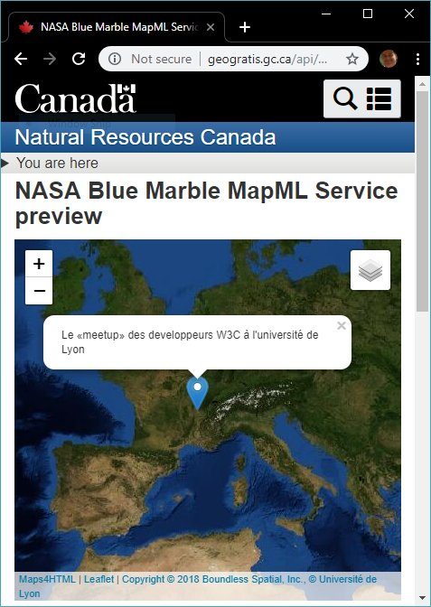
https://twitter.com/w3cdevs/status/1043154650860535809First, what is the current Intersection Observer API? it allows to detect if a particular HTML element is currently exposed in the visible viewport of the browser https://w3c.github.io/IntersectionObserver/
Introducing another demo of exploratory work at the @w3c
#w3cdevs2018 meetup on October 22 in Lyon: a new version of the Intersection Observer API https://www.w3.org/2018/10/Meetup/demos.html #OFFBlendWebMix
https://twitter.com/w3cdevs/status/1044625091080966144It's already widely used on the Web, with 20%+ of page loads e.g. in Chrome making use of it https://www.chromestatus.com/metrics/feature/timeline/popularity/1368
https://twitter.com/w3cdevs/status/1044625095543738372Its use cases includes lazy loading images, fast scrolling for dynamic lists and detection of ad visibility.
With the exception of Safari, it's available across all the modern browsers https://developer.mozilla.org/en-US/docs/Web/API/Intersection_Observer_API#Browser_compatibility
and there is an active @webkit bug on this https://bugs.webkit.org/show_bug.cgi?id=159475
https://twitter.com/w3cdevs/status/1044625093295575040Specifically, it gives the iframe a strong guarantee that its content is visible on screen, and has not been painted over or altered in any way by the embedding document.
https://twitter.com/w3cdevs/status/1044625100723671040The primary motivation is to eliminate common patterns of fraud and abuse on the Web, #clickjacking in particular, and to enable trust relationships between embedded third-party iframes and their host documents
https://twitter.com/w3cdevs/status/1044625098999844865The demo of the #w3cdevs2018 meetup will be for features under consideration for a next version of the API: it would extend the current API to provide a strong guarantee that a particular #HTML element is completely visible and unmodified
https://twitter.com/w3cdevs/status/1044625097561124866Come discover this cool demo presented by Stefan Zager (@google). The #w3cdevs2018 meetup is free and open to all, you just need to register! https://ti.to/w3c/w3c-developer-meetup-lyon-2018

https://twitter.com/w3cdevs/status/1044625102359416833In her talk, @alispivak will share some of the background history of @mozdevnet and how the Product Advisory Board (PAB) started last year is helping to better create the documentation developers want and need
https://www.w3.org/blog/2017/10/w3c-to-work-with-mdn-on-web-platform-documentation/
Introducing another of our great speakers at #w3cdevs2018 in #Lyon: come hear @alispivak (head of @mozilla developer ecosystem) talk about @MDN and its partnership with @w3c and browser vendors to document the Web.
Register at https://ti.to/w3c/w3c-developer-meetup-lyon-2018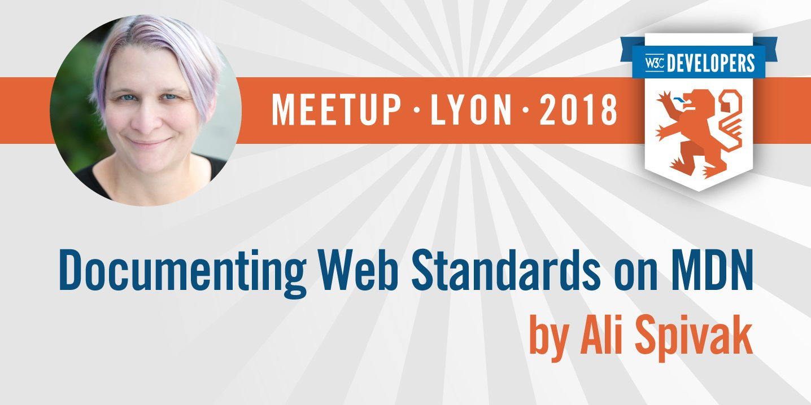
https://twitter.com/w3cdevs/status/1044965727424446465The second one was in August and the minutes are (as always) publicly available https://github.com/mdn/pab/blob/master/meeting-notes/2018-07-notes.md
We had a unicorn 🦄 as a guest star!
https://twitter.com/robertnyman/status/1025089955582763010
https://twitter.com/w3cdevs/status/1044965731144798208The PAB had two face to face meetings - the first one was back in January, and we shared back then how exciting it was https://twitter.com/w3cdevs/status/956109136302956544
https://twitter.com/w3cdevs/status/1044965729269895169To hear directly from @alispivak on this and @mozdevnet in general, and meet many of the PAB members who will be at #w3cdevs2018, do not forget to register https://www.w3.org/2018/10/Meetup/
https://twitter.com/w3cdevs/status/1044965735519473664Among the many the exciting projects @mozdevnet is pushing and the PAB is tracking, most relevant for @w3cdevs is a push to make Web documentation a channel for input & feedback to standardization - lots of ideas toward that in our issue tracker https://github.com/mdn/pab/issues?q=is%3Aissue+is%3Aopen+label%3Astandardization
https://twitter.com/w3cdevs/status/1044965733778771968in a few minutes, the @w3c workshop on permissions and user content will start in San Diego, CA 🇺🇸
https://twitter.com/w3cdevs/status/1018899131820118017
The agenda for the workshop over the next two days is online https://www.w3.org/Privacy/permissions-ws-2018/schedule.html
https://twitter.com/w3cdevs/status/1044977957830373377The context-setting talk will be given by @ThisIsJoFrank based on the position paper she published a few weeks ago https://twitter.com/samsunginternet/status/1036954104860434432
https://twitter.com/w3cdevs/status/1044977961609449472We wish all the participants plenty of inspiration to pave the way to making the Web both powerful and respectful of its users privacy!
https://twitter.com/w3cdevs/status/1044977967443705857Permissions and how they're presented, bundled, exposed are key to a number of the most existing ongoing developments in @w3c, #WebRTC, #WebXR and #ImmersiveWeb, #WebPayments among others
https://twitter.com/w3cdevs/status/1044977965715607552That and all the other position papers are linked from https://www.w3.org/Privacy/permissions-ws-2018/papers.html
https://twitter.com/w3cdevs/status/1044977964058902528Introducing our last (but not least) set of demos of not-yet-standards-track work at @w3c #w3cdevs2018 meetup October 22 in #Lyon: #MachineLearning for the Web https://www.w3.org/2018/10/Meetup/demos.html#demos-explo #OFFBlendWebMix
A related #CommunityGroup on Machine Learning for the Web is under preparation, with the objective to incubate dedicated low-level Web #APIs for machine learning inference in #WebBrowser and in products using modern Web engines https://twitter.com/anssik/status/1045002714080575488
https://twitter.com/w3cdevs/status/1045289163854090240.@NingxinHu (@intel) will present three demos of #MachineLearning for the Web.
1) making real-time object detection in browser a reality for compelling immersive Web experiences and more #ImmersiveWeb #MachineLearning https://www.youtube.com/watch?v=XGgiDU-8d60
The Machine Learning Community Group has now been officially proposed: https://www.w3.org/community/blog/2018/10/03/proposed-group-machine-learning-for-the-web-community-group/ with a proposed charter
https://twitter.com/w3cdevs/status/10452891678932705283) real-time human pose estimation in the browser enabling new class of experiences on the Web ranging from fitness, interactive installations to augmented reality #ImmersiveWeb #MachineLearning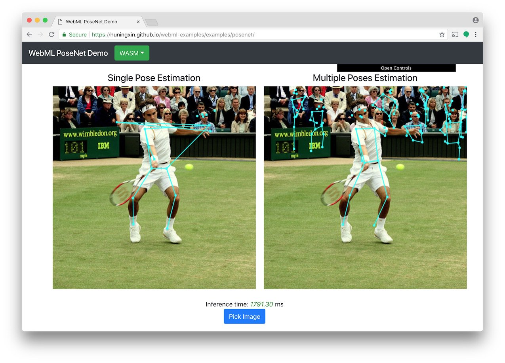
https://twitter.com/w3cdevs/status/10452891725363814402) image classification in the browser that works offline without dependency on cloud infrastructure. #MachineLearning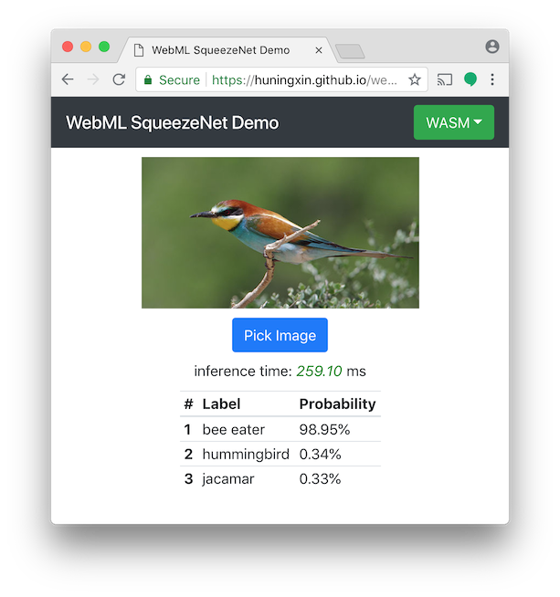
https://twitter.com/w3cdevs/status/1045289169864609793All these demos and more will be shown at the #w3cdevs2018 #DevMeetup on October 22 in #Lyon. This event is free but you need to register! https://ti.to/w3c/w3c-developer-meetup-lyon-2018

https://twitter.com/w3cdevs/status/1045289175375912960The report of the publishing workshop #w3ctokyows is not available yet, but you can already enjoy a thorough report from @EDRLab_EPUB https://twitter.com/EDRLab_EPUB/status/1044918870170112000
https://twitter.com/w3cdevs/status/1045307947264483330The #WebRTC spec, which enables #P2P audio-video communication on the Web, has been split into two ✂️: the core work on PeerConnection API on the one hand, the Identity Framework on the other
https://twitter.com/w3c/status/1045310885969956865
The work on the PeerConnection continues in the same repository
https://github.com/w3c/webrtc-pc/
The work on Identity for WebRTC has moved to https://github.com/w3c/webrtc-identity
Both continue as Candidate Recommenations, looking for implementation #timetoimplement https://twitter.com/w3cdevs/status/988788171977748482
https://twitter.com/w3cdevs/status/1045325394033938432